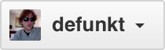

You’ve been added to the GeekSalon organization!
Here are some quick tips for a first-time organization member.
-
Use the switch context button in the upper left corner of this page to switch between your personal context (y0k0ta19) and organizations you are a member of.
- After you switch contexts you’ll see an organization-focused dashboard that lists out organization repositories and activities.
evalphobia starred sensorbee/sensorbee
evalphobia created repository evalphobia/dockerfiles
NT-D created repository NT-D/MobileAppBestPractice
NT-D created repository NT-D/MobileAppBestPractice
NT-D created repository NT-D/vsgitignore2
NT-D created repository NT-D/VisualStudioGitignore
NT-D created repository NT-D/MobileAppBestPractice
evalphobia starred jpillora/overseer
evalphobia starred matryer/silk
evalphobia created repository evalphobia/google-api-go-wrapper
evalphobia created repository evalphobia/go-ga
evalphobia created repository evalphobia/eurekache
NT-D starred Azure/azure-storage-ios
NT-D created repository NT-D/tutorial
NT-D created repository NT-D/AzureDev
NT-D created repository NT-D/AzureMobileAppMacDev
NT-D created repository NT-D/DataAnalytics
NT-D starred AllenDowney/ThinkStats2
NT-D starred MicrosoftBigData/AzureDataLake
NT-D starred Microsoft/PowerBI-CSharp
Welcome to GitHub! What’s next?
()